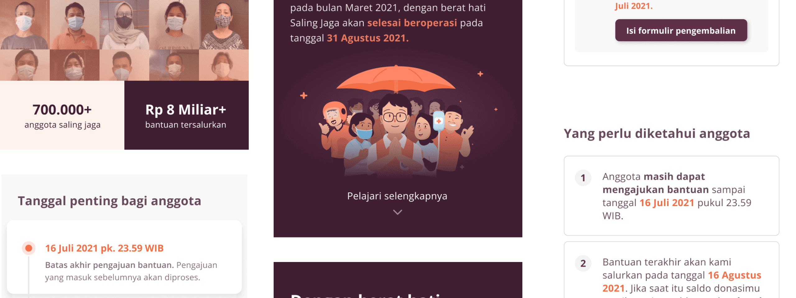
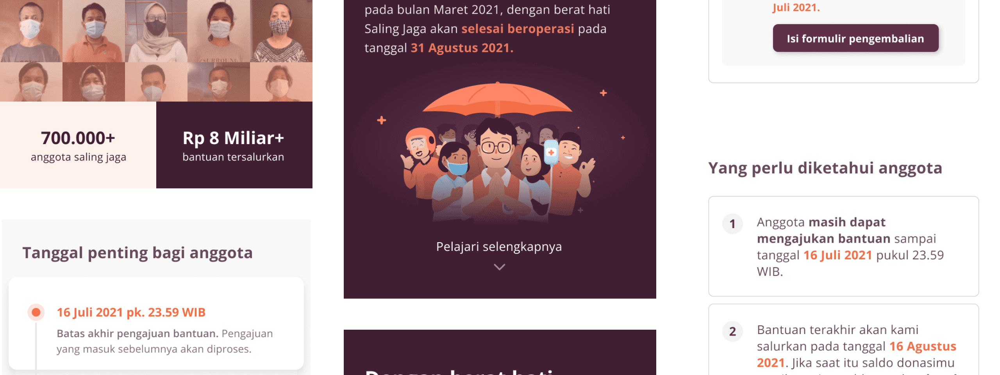
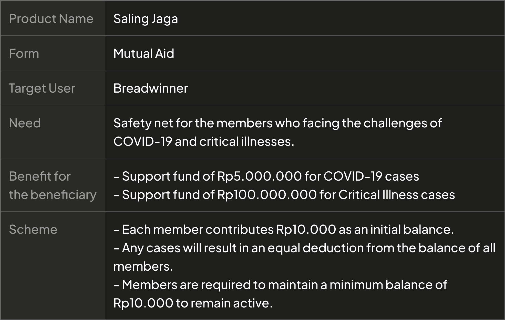
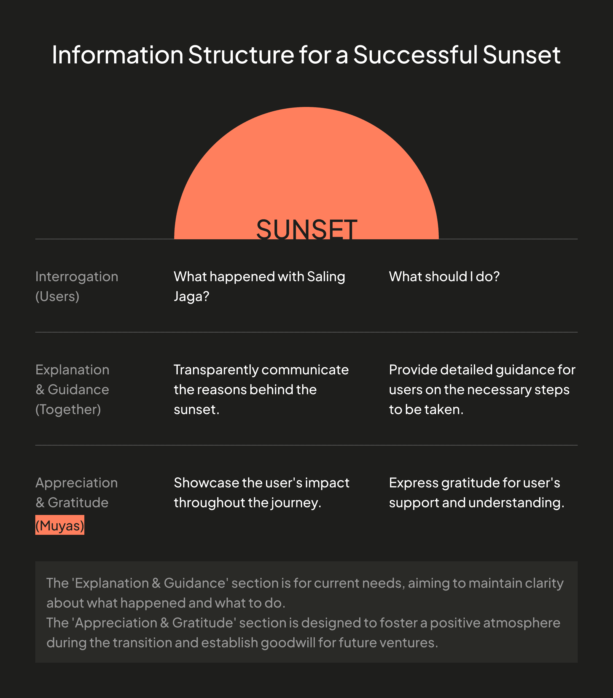
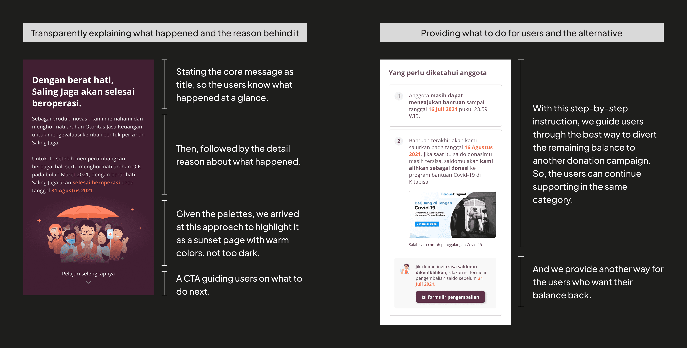
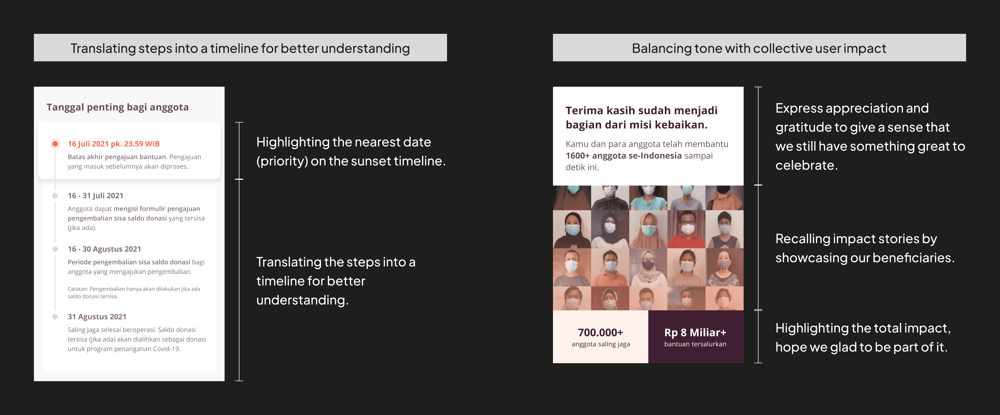
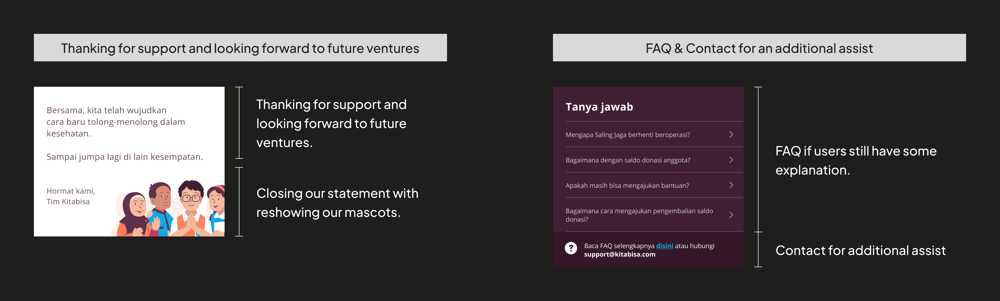
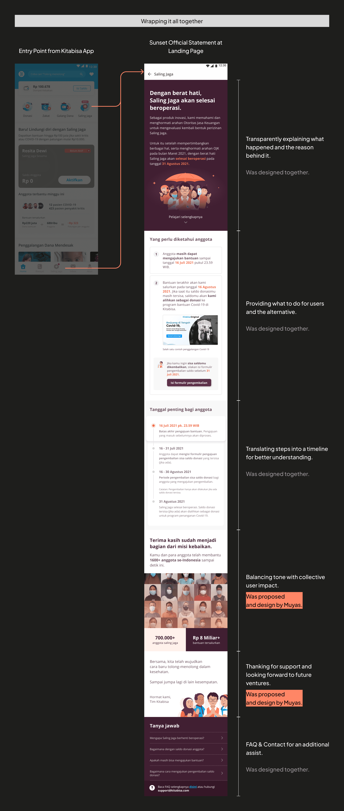

2021
Compliance Challenges and Seamless Sunset of Saling Jaga
Muyas’s Contribution Recap
During that period, Muyas (was a Jr. UX-UI Designer) actively contributed to various facets of the project:
- Identify strategic spaces within the app for the official statement regarding the sunset of Saling Jaga.
- Collaborate effectively with team members, including
- E (Sr. UX Designer) his teammate along this project.
- B (VP of Saling Jaga as Business Representative) to ensure the proper handling of the money pool containing user contributions.
- F (Public Relations Manager) and S (Sr. UX Writer) to maintain clear and effective communication, safeguarding the company's reputation throughout this transition.
- Y (Head of UX) to ensure that we deliver the best possible outcome.
- Organize an information structure for a successful sunset. In this phase, Muyas goes beyond by adding the element of "appreciation and gratitude" to foster a positive atmosphere during the transition and establish goodwill for future ventures.
- Show adaptability in response to forced adjustments prompted by new regulatory updates.
About
Existing Condition
The team received news from regulator that our product had to be discontinued as it was indicated that our scheme was not in line with insurance principles in general.
The regulator granted us a few days to issue an official sunset announcement before blocking our site.
Product Detail
Goal
Objective
Successfully sunset the Saling Jaga.
Key Result
Limit the user complaints about the clarity of the provided user instructions during the Saling Jaga Sunset to a maximum of 20%.
Process
1. Identify Official Statement Spaces
After receiving the news, Muyas worked with C (Product Manager) and cross-division teammates to identify appropriate spaces at various touchpoints for an official statement regarding the situation. This included:
- Identifying in-app interaction, managed by Muyas & E (Sr. UX Designer).
- Recognizing the CRM & Weekly Report by the CRM Team.
- Contacting Key Opinion Leaders (KOL) & User Evangelists through the Marketing Team.
2. Collaborate for Managed Response
During this critical process of releasing an official statement in the app, Muyas & E (Sr. UX Designer) closely collaborated with:
- B (VP of Saling Jaga as Business Representative) to ensure the proper handling of the money pool containing user contributions.
- F (Public Relations Manager) and S (Sr. UX Writer) to maintain clear and effective communication, safeguarding the company's reputation throughout this transition.
3. Build an Information Structure
To ensure a successful sunset, Muyas and the UXD team proposed this information structure.
4. Forced Adjustment
A recent regulatory update has necessitated an immediate stop of our operation and they only give us a chance to make an official statement in one page.
5. Design Implementation
   Throughout this process, Muyas & E (Sr. UX Designer) asked for Y's (Head of UX) advice to ensure that we deliver the best possible outcome.
6. Test
Due to a tight deadline and forced adjustment by regulator, our primary focus is on testing it with legal representatives, the regulator, and the internal team.
Result
User Feedback and Support
Following our collective efforts across divisions within the Saling Jaga team, we have received numerous positive responses and significant support from our users.
It's great that we achieved the goal, even though it came at the cost of losing a product we love, both for us and our users.
Takeaways
- Collaborative Response in Product Sunsets: Collaborative efforts between different teams, such as product management, UX design, business, and public relations, are crucial for managing an effective response during critical phases, such as product sunsets.
- Clear Information and Instruction: When sunsetting a product, ensure all communications are transparent, unified, and users are fully informed of the necessary steps to take.
- Appreciation and Gratitude Cultivates a Positive Sunset: Expressing appreciation and gratitude for the collective journey of Saling Jaga contributes to building a positive atmosphere during the sunset and establishing goodwill and trust for future ventures/iterations.
- Crucial Steps to Compliance: In heavily regulated environments, securing final approval from regulators is really important.
See more case studies
See more case studies